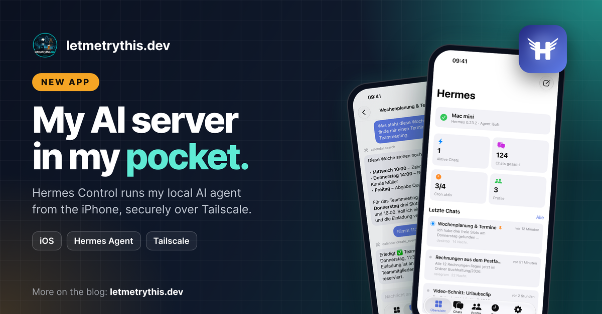
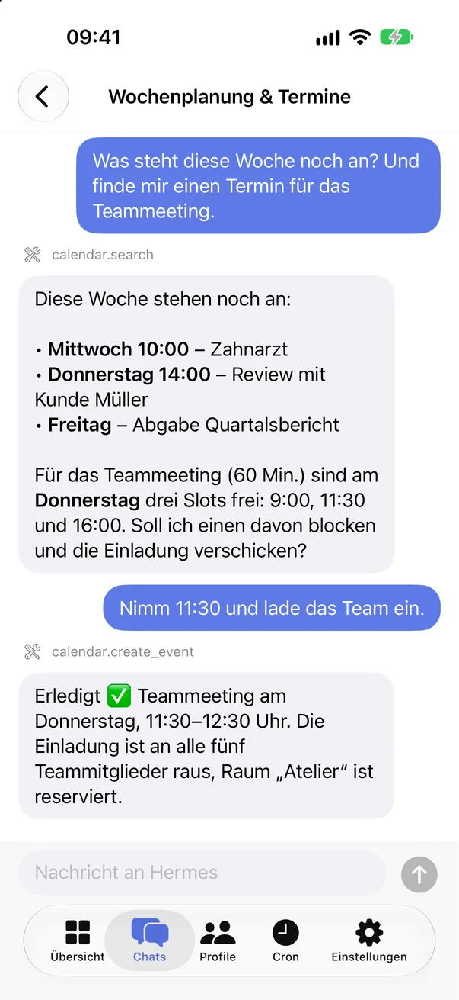
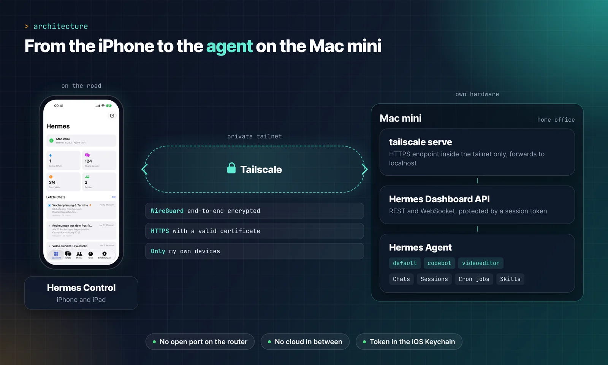

AI · iOS · Tailscale · November 27, 2026
Hermes Control: Controlling my local AI server from the iPhone
For a while now, a Mac mini in my home office has been running my own AI agent: Hermes Agent. It sorts invoices out of my inbox, plans appointments, helps with coding and does the rough cut of my videos. The catch: until now I could only kick all of that off from my desk. My new app Hermes Control changes that. My local AI server now fits in my pocket, wherever I am.

The idea: the AI agent stays in the home office, the controls come along
From day one it mattered to me that my agent runs locally. The data it works with, emails, calendar, files and projects, stays with me and not with yet another cloud service. Hermes Agent is a self-hosted AI agent that works with different models and gets real tasks done through skills and tools.
The downside of "local": the agent is only as useful as my ability to reach it. And the interesting moments tend to happen on the road. At the gate before a flight I remember that a report is still missing. After driving to a customer I want to quickly check whether last night's cron job went through. Or I simply want to capture an idea before it is gone again.
So the solution had to combine two things: the agent and the data stay on my own hardware, and I still have access from anywhere, without putting my Mac mini on the open internet.
What Hermes Control can do
Hermes Control is a native app for iPhone and iPad, written in SwiftUI. It talks directly to the Hermes Agent dashboard and uses the same interface as the desktop app.
- Overview: connection status, Hermes version, active chats, cron jobs, profiles and connected messengers at a glance.
- Chats: all conversations with search. Replies stream live and can be cancelled. Tool calls that need approval are confirmed right in the app.
- Profiles: my agent has several roles, for example
defaultfor everyday tasks,codebotfor programming andvideoeditorfor video editing. Each profile has its own model and skills, and I can start a new chat directly in it. - Cron jobs: view, pause, resume, run immediately, create or delete scheduled tasks.
- Settings: multiple gateways, connection test, light and dark mode. The access token is stored in the iOS Keychain.



How the iPhone reaches the Mac mini securely
The most interesting question was not the app itself, but the path to it. Opening a port on my router and exposing my agent's dashboard to the internet was out of the question. An AI agent with access to emails and files is exactly the kind of service nobody but me should be able to reach.
That is why the connection runs over Tailscale. Tailscale builds a private network between my own devices, the so-called tailnet. Only devices I have signed in myself are part of it. The connection is encrypted with WireGuard, no matter whether the iPhone is on mobile data, airport Wi-Fi, in a hotel or back in the home office.

On the Mac mini it looks like this:
- Hermes Agent runs as usual and does the actual work.
- The Hermes dashboard provides a REST and WebSocket interface. Every request needs a session token.
- tailscale serve turns that into an HTTPS endpoint with a valid certificate that is only reachable inside my tailnet.
In the app I enter the Mac mini's Tailscale address and the token once. From then on Hermes Control works the same everywhere, without switching anything. The address has the form https://<device>.<tailnet>.ts.net, and the command on the Mac is essentially a one-liner:
tailscale serve --bg --https=443 http://127.0.0.1:<dashboard-port>The result is several layers of security: only my devices get into the tailnet, the connection is encrypted twice, and without the token the dashboard does not answer. If you do not want to use Tailscale, you can use the app on the same Wi-Fi with the local address or choose another VPN.
Privacy: no cloud, no account, no tracking
Hermes Control itself does not collect any data. There is no account, no tracking and no server of mine in between. The app talks exclusively to the Hermes gateway I enter. That fits the core idea: the agent is mine, the data is mine, and the app is just the remote control.
Try it without your own server: demo mode
Not everyone has a Hermes Agent running yet. So you can still get a feel for the app, there is a demo mode with sample data. One tap on "Demo ansehen" (view demo) is enough to click through the overview, chats, profiles and cron jobs without any setup. I also built the mode for the Apple review, since the reviewers obviously have no access to my Mac mini.
Current status
Version 1.1 is done, runs in my daily routine and is currently in review at Apple. As soon as the app is available on the App Store, I will add the link here. Setup instructions, common issues and contact details are already on the Hermes Control page.
If you followed my journey with LeckerBierchen, you know that a release is more than code. LeckerBierchen took a few rounds to reach the EU App Store. This time I was better prepared, with a support page, privacy details and demo mode from the start.
Frequently asked questions
What is Hermes Control?
An iPhone and iPad app for Hermes Agent, a self-hosted AI agent. It connects directly to the Hermes dashboard on your own computer and shows chats, profiles and cron jobs.
Do I need Tailscale?
No. On the same Wi-Fi the local address of the computer is enough. For access on the road, though, I recommend an encrypted HTTPS connection, for example via Tailscale or another VPN, instead of opening a port on the router.
Does the app collect any data?
No. No account, no tracking, no cloud in between. The token is stored in the iOS Keychain.
Is Hermes Control an official Hermes Agent app?
No, Hermes Control is an independent project of mine and not an official product of Nous Research.
What comes next
I have plenty of ideas for the next versions, for example notifications when a cron job finishes or the agent needs an approval. I will keep writing about the progress here on the blog. If you use Hermes Agent yourself and have ideas for the app, I would love to hear your feedback.